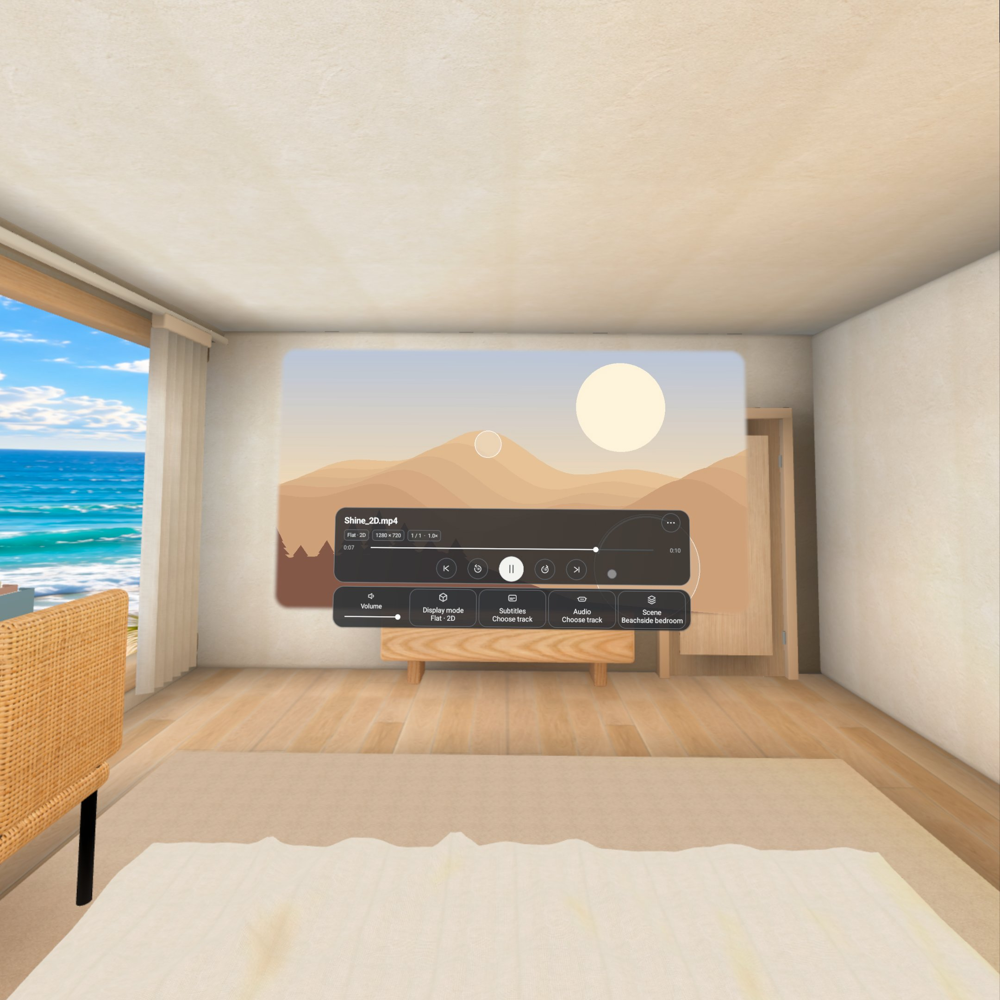
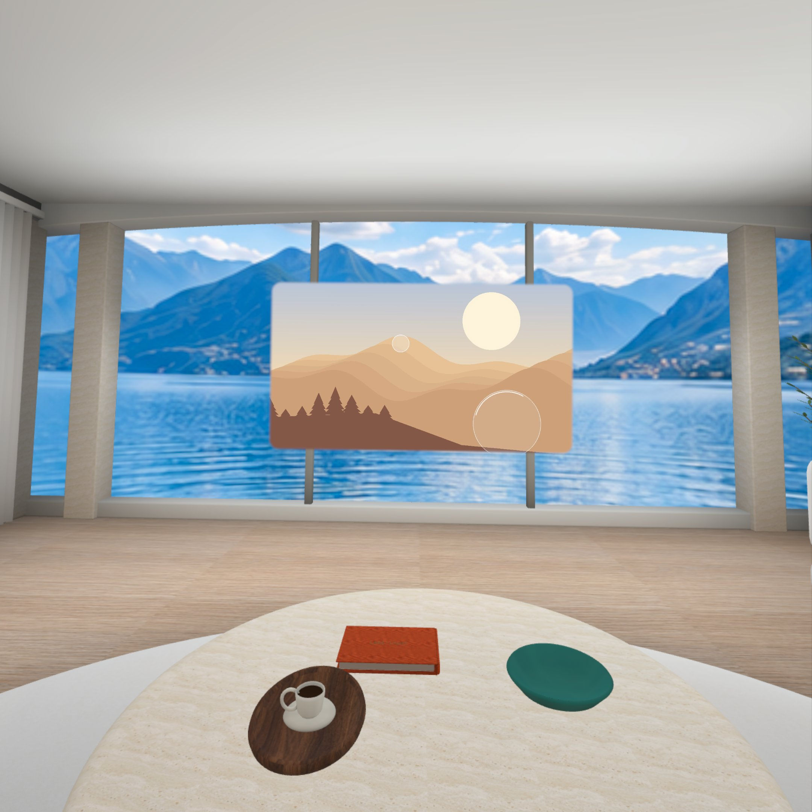
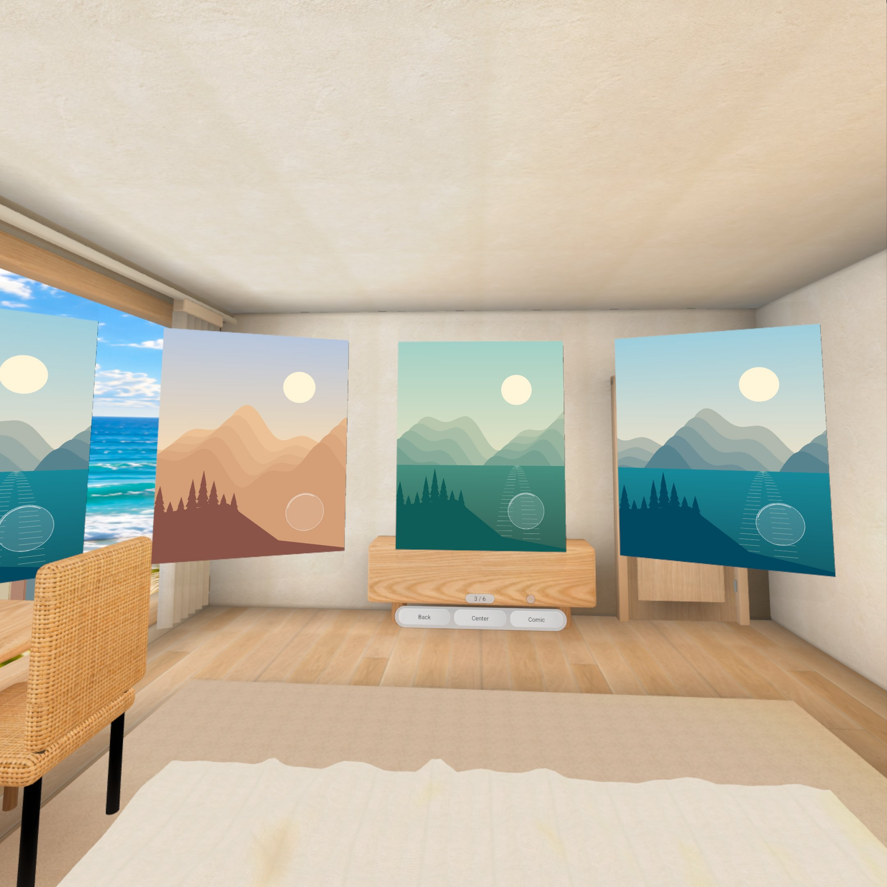
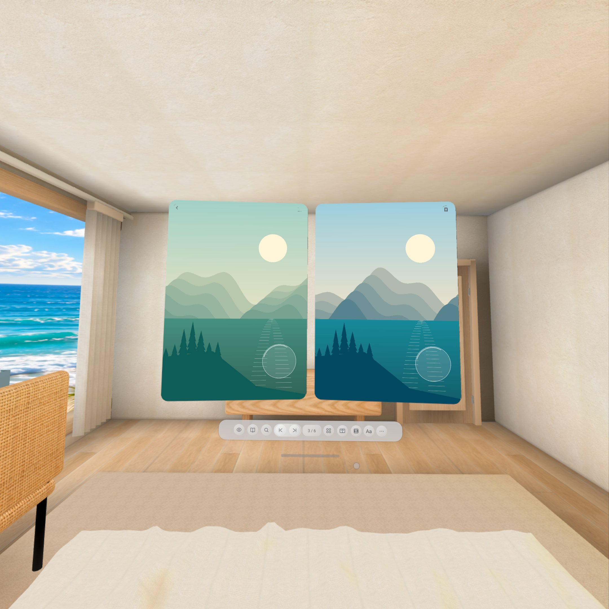
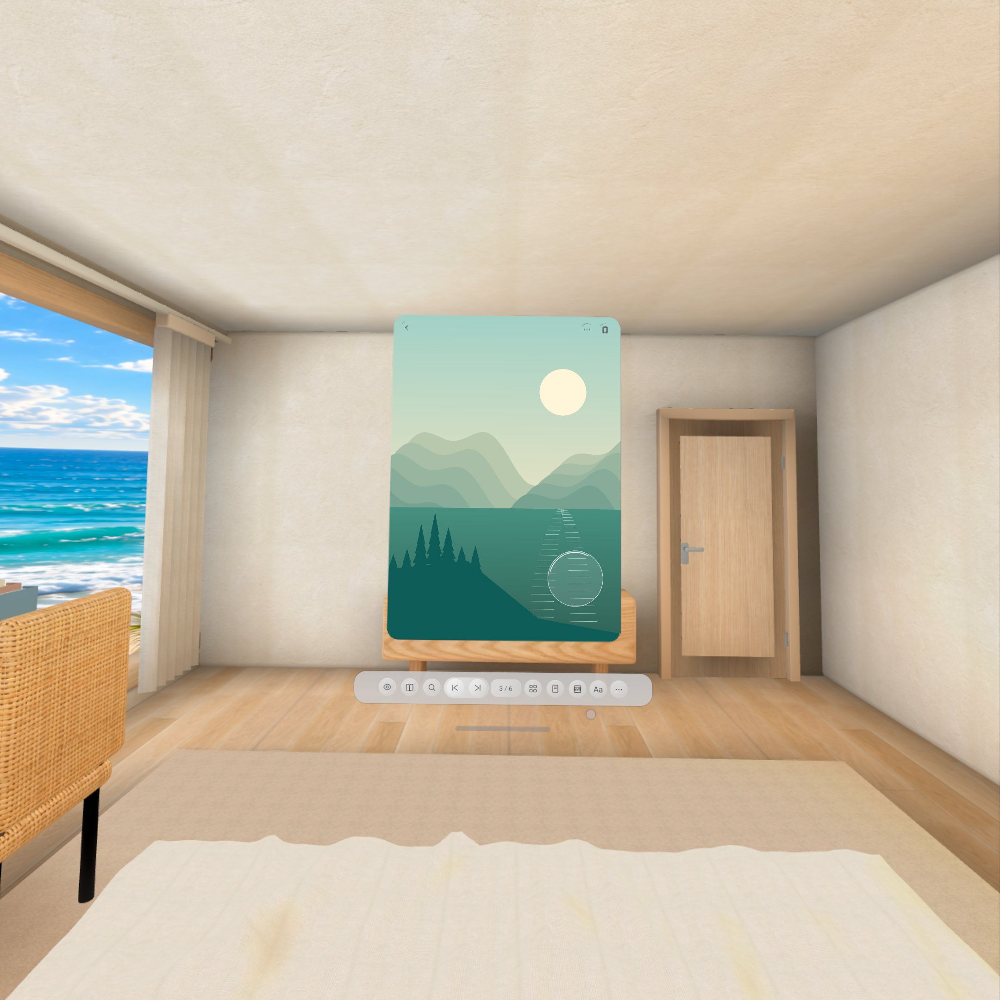
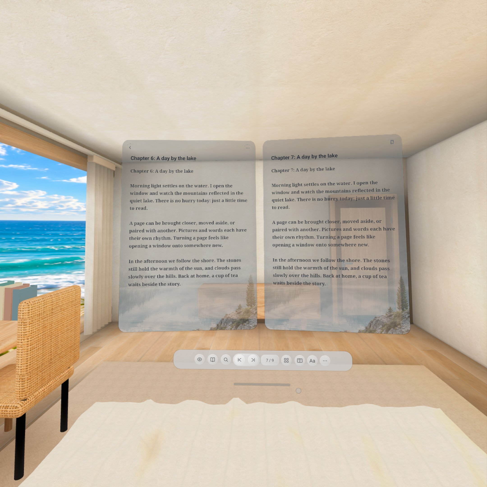
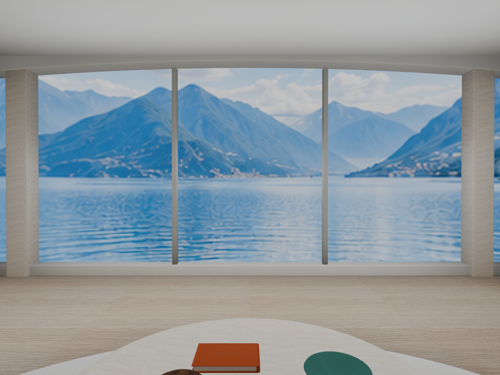

自在观看
屏幕，为你而放。
2D、3D、VR180 与 VR360 视频。移动、缩放，找到刚刚好的观看位置。


从一场电影到一本漫画，用舒服的方式，沉浸在你自己的内容里。
2D、3D、VR180 与 VR360 视频。移动、缩放，找到刚刚好的观看位置。

在环绕画廊中浏览图片，轻轻滑动，放大查看每个细节。

两页并排展开，用空间翻页开启下一章。

切换单页阅读，在舒适的视角里看清每一格。

单页或双页阅读，调整字号与背景，找到属于你的阅读节奏。

七个沉浸场景，还有透视和纯色背景。部分场景可切换昼夜，房间亮度也能按喜好调整。

湖畔客厅、卧室、影院……挑一个喜欢的空间，再将屏幕调整到舒服的位置。
浏览本地文件、DLNA 与 SMB 共享、WebDAV 和 OneDrive。
选择字幕，调整时间、字号与位置，让观看更从容。
漫画、TXT、可重排 EPUB 与 PDF，支持阅读布局调整。
面板材质、外观设置与中英文界面，按你的喜好选择。
接收兼容 DLNA 应用的视频投屏，也可使用 YouTube 电视配对或内置网页浏览器。
浏览支持的 ZIP、7z 和 RAR 压缩包，也可输入密码访问加密文件。
支持 MP4、MKV 等常见格式，实际兼容性取决于文件编码和设备。
调整画面位置、大小与圆角边缘，并为不同场景记住布局。
为 Meta Quest 3 打造。有问题或建议，欢迎告诉我们。